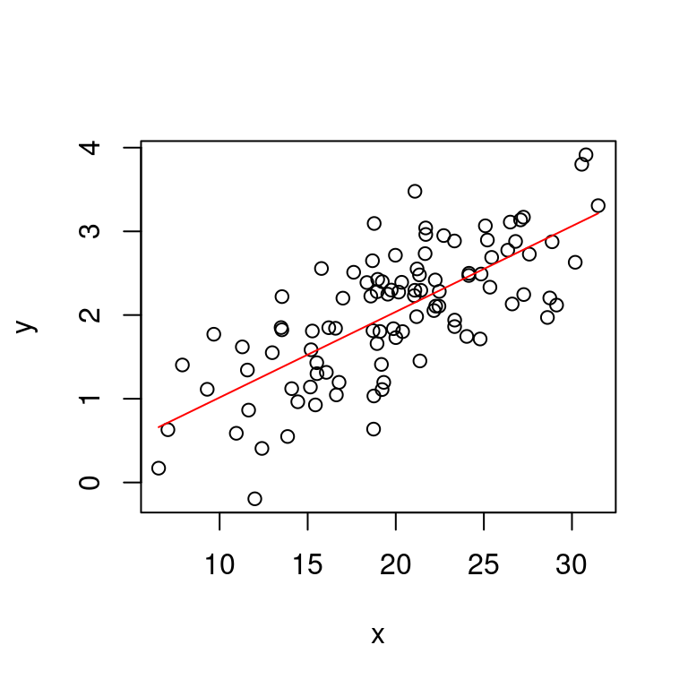
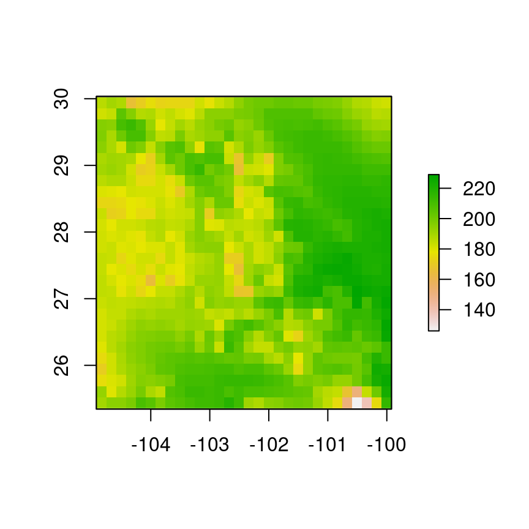
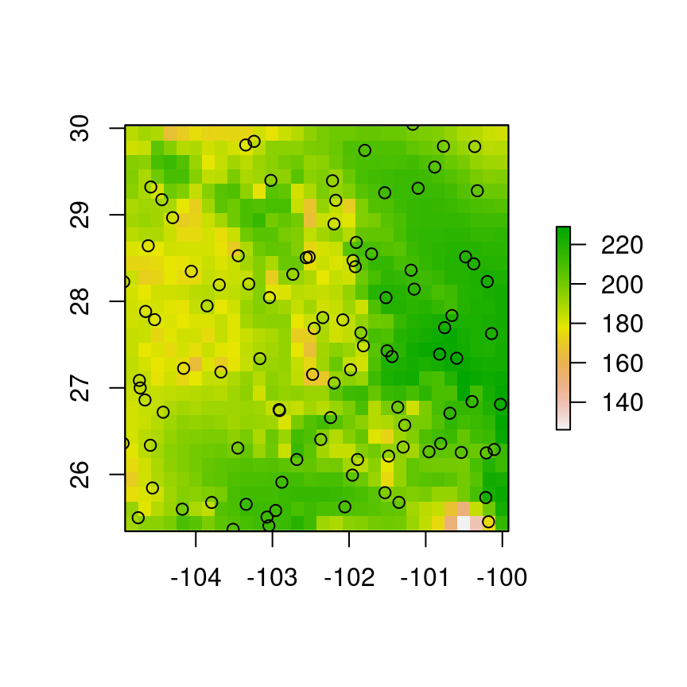
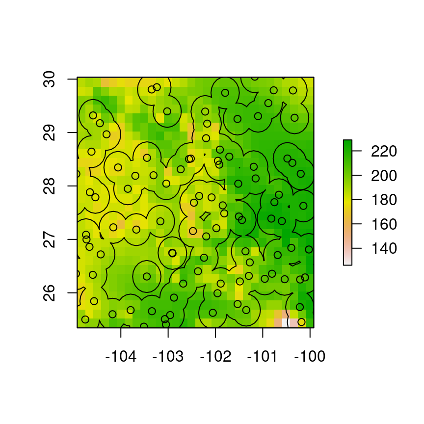
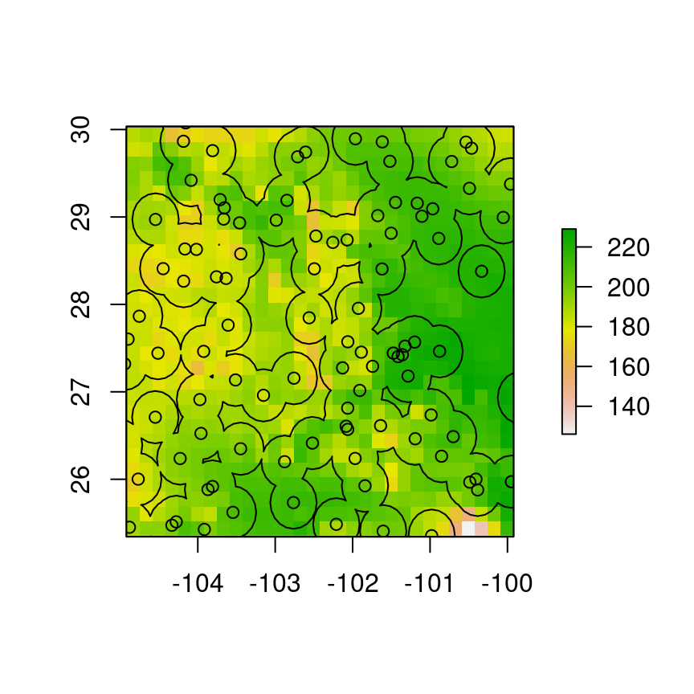

3 Unidad I: Introducción al modelado de nichos ecológicos
3.1 Introducción al modelado de nichos ecológicos
La modelación correlativa de nichos ecológicos y áreas de distribución consiste del análisis de las condiciones ambientales de las regiones donde ocurre un organismo. Frecuentemente el análisis de dichas condiciones se realiza con el fin de representarlas en un producto cartográfico. La representación cartográfica de la relación entre un organismo y el medio ambiente es posible gracias a que todas las condiciones ambientales están expresadas en la geografía. Por ejemplo, la temperatura media anual presenta patrones geográficos evidentes a lo largo y ancho de la geografía mexicana.

Figura 3.1: Temperatura anual promedio en una capa ráster de México.
Los modelos de nicho ecológico tienen fuertes bases biológicas, sentadas principalmente en el fenómeno de tolerancia fisiológica, la cual se refiere a que todos los organismos tienen la capacidad de soportar ciertas condiciones climatológicas. La tolerancia térmica, por ejemplo se refiere a los límites de temperatura a los cuales un organismo moriría de choque de calor o hipotermia. Por otro lado, los requerimientos hídricos podrían estar relacionados con la cantidad de agua que el organismo en cuestión necesita ingerir, y la tasa de evapotranspiración se refiere a la rapidez con que pierde agua a una temperatura determinada. Como es evidente, todas las dimensiones de la tolerancia fisiológica pueden estar interconectadas y son sumamente complejas.
En realidad, los organismos son afectados por muchas fuerzas que se expresan en la geografía, desde el clima, la topografía, química del suelo, el hábitat primario (agua o tierra) y otros organismos. Las diferentes clases de influencias del medio ambiente sobre la distribución espacial de un organismo se clasifican como (Soberón and Peterson 2005):
- Bióticas Interacciones con otros organismos
- Abióticas Interacciones con las características no biológicas como temperatura, radiación solar y cantidad de agua
- Movimiento Espacio disponible para dispersión
Estos tres componentes se pueden representar con un diagrama de Euler de modo que las áreas ocupadas por un organiso corresponden a la intersercción de los tres conjuntos \(B \cap A \cap M\).

Figura 3.2: Diagrama BAM clásico muestra cómo la geografía ocupada (la distribución realizada de una especie) resulta de la intersección de los factores bióticos, abióticos y de movimiento.
En gran parte de la literatura existente los términos “Species Distrobution Models” y “Ecological Niche Models” se usan indistintamente. Es innegable que con ambos métodos se pueden obtener productos similares, sin embargo aquí vamos a hacer un distinción:
- Modelos de distribución Buscan estimar la geografía ocupada de una especie, la intersección \(B \cap A \cap M\).
- Modelos de nicho ecológico Buscan estimar la tolerancia fisiológica de una especie a las condiciones abióticas, únicamente el componente \(A\) de la figura 3.2.
Para la gran mayoría de las especies, los nichos ecológicos sólo pueden ser estimados con experimentos bien controlados, lo cual puede ser éticamente inaceptable y logísticamente imposible. La modelación correlativa de nichos, entonces, es una de las pocas alternativas con que se cuenta para estimar los efectos del clima sobre las especies. Naturalmente el resultado de todos estos análisis tienen diferentes significados, los cuales tienen que corresponder con el nombre que se les da. Los modelos de distribución son representaciones de la distribución realizada de una especie, mientras que la representación cartográfica de los modelos de nicho son de la distribución potencial.
Debido a que es muy difícil estimar las interacciones bióticas con métodos correlativos, los modelos de distribución suelen estimar relaciones más complejas entre el medio ambiente y la presencia de las especies. Los modelos de nicho ecológico, estiman relaciones más simples y generalmente con respuestas suavizadas.

Figura 3.3: Ejemplo de diferencias en las respuestas de un organismo a la temperatura promedio en un modelo de distribución y un modelo de nicho ecológico.
Los métodos que se utilizan para estimar las respuestas al medio ambiente en la modelación correlativa de nichos ecológicos, son en su gran mayoría modelos estadísticos. El más popular de ellos es MaxEnt, pero en este curso nos enfocaremos más en el uso de Modelos para Procesos de Puntos, los cuales pueden ser considerados como equivalente a MaxEnt, con la ventaja de que son más flexibles y permiten maximizar la utilidad de los datos tomando en cuenta la relación entre los puntos y la geografía. Una gran desventaja de los procesos de puntos es que son más laboriosos de implementar que MaxEnt pues requieren más programación en R, en particular con el paquete spatstat Baddeley and Turner (2005).
3.2 Insumos para el modelado correlativo de nichos ecológicos
Como se vio anteriormente el modelado correlativo de nichos ecológicos consiste principalmente del análisis de las localidades donde se ha observado a indiviuos de una especie en relación a las condiciones ambientales de esas localidades. Para hacer estos análisis entonces se requieren principalmente dos tipos de insumos:
Base de datos con las coordenadas donde se ha registrado la presencia de individuos de la especie
Base de datos de las características ambientales (climáticas, vegetación topografía) de la región de estudio
Para obtener las bases de datos sobre los registros de presencia de las especies se puede acceder a repositorios de acceso libre como Global Biodiversity Information Facility y Naturalista. En estos repositorios se pueden hacer búsquedas manuales para crear una base de datos que será descargada. Estas bases de datos contienen información sobre la identidad de los organismos y los individuos, si están presentes en una colección zoológica (GBIF), cuándo fueron registrados y la persona que obtuvo el registro. Naturalista, sin embargo es una colección de foto-registros hechos por ciudadanos no especialistas y que son posteriormente identificados o confirmados por algún experto/a.
Los datos ambientales también pueden obtenerse de repositorios de acceso abierto. Las dos bases más populares son WorldClim y Chelsa. Ambas contienen información únicamente climática, y debido a que en este curso se enfoca en la modelación de nichos ecológicos son las que más utilizaremos.
3.2.0.1 Tipos de archivos
3.2.0.1.1 Datos de presencia
Estas bases de datos son por lo general tablas con columnas y filas. Las columnas representan descripciones de los individuos registrados y cada fila corresponde a un individuo de la especie de interés. Las extenciones de los archivos que vamos a descargar son .csv (Comma Separated Value), que son archivos de texto como los .txt salvo que contienen las columnas separadas por comas y las filas por cambios de renglón (intro). Los archivos .csv pueden inspeccionarse a mano con Excel, aunque en ocasiones este puede dañar los archivos y hace que salgan errores cuando los abrimos en R.
3.2.0.1.2 Datos ambientales
Estos datos están en formatos legibles por algún sistema de información geográfica (como QGIS o ArcGIS). Las extensiones de estos archivos pueden ser .bil, .tif, .asc y son en esecia una representación geo-referenciada de valores de las diferentes variables (temperatura, precipitación, etc.). En ambas bases de datos (WorldClim y Chelsa), hay dos modalidades de datos, las variables por separado en promedios mensuales (temperatura mínima y máxima y precipitación), o en forma de variables bioclimáticas. Estas son 19 variables que representan algunas combinaciones de temperatura y precipitación, p. ej.:
- bio 1 Temperatura anual promedio
- bio 2 Rango anual promedio de temperatura
- bio 9 Temperatura promedio del cuarto más seco
- bio 15 Estacionalidad de la recipitación
3.3 El proceso de calibración
Se llama calibración al proceso de análisis y desarrollo del modelo. Como se mencionó en la introducción a modelación de nichos, estos son mayoritariamente, modelos estadísticos. Por lo tanto en el contexto de modelación estadística, haremos un breve repaso de cómo se ajusta un modelo a los datos. Para comprender este proceso vamos a revisar el concepto matemático de función y dos tipos de estas, la línea recta y la parábola.
3.3.0.1 La función
En ciencias frecuentemente se estudia cómo un fenómeno afecta a otro. Por ejemplo, cómo la disponibilidad de recurso afecta el crecimiento poblacional. En modelación de nichos ecológicos vamos a ver cómo las características ambientales afectan la presencia de una especie (en términos muy laxos). Estas relaciones pueden ser representadas matemáticamente utilizando el concepto de función. Una función es una regla de correspondencia entre dos conjuntos \(x\) y \(y\), de modo que para cada elemento del conjunto \(x\) existe un solo elemento del conjunto \(y\). Los elementos de \(y\) son llamados la imagen de \(x\) bajo la regla de correspondencia \(f\), que se denota como \(f(x)\). La función \(f(x)\) se lee \(f\) de \(x\), y el conjunto \(x\) es el dominio y \(y\) es el codominio de \(f\).
Debido a que todos los valores de \(y\) son producidos por la función \(f\), a \(x\) también se le conoce como variable independiente y a \(y\) como dependiente (puesto que depende de \(x\)). En términos prácticos \(f(x) = y(x)\). La manera en que los valores de \(y\) corresponden a ciertos valores de \(x\) está determinado por unas reglas concretas, generalmente en forma de una operación ó serie de operaciones matemáticas. Las siguientes son ejemplos de funciones
- \(y(x) = a + bx\)
- \(y(x) = x^2\)
- \(f(x) = \sin(x - c)\)
- \(f(x) = e^{rx}\)
- \(f(x) = a \exp(b - cx)\)
En todas estas funciones la variable independiente es \(x\) y la variable cuyos valores dependen de \(x\) son \(y(x)\) ó \(f(x)\). A continuación veremos dos tipos de funciones que utilizaremos ampliamente durante este curso para modelar la relación entre la presencia de las especies y las características ambientales.
3.3.0.2 La línea recta
La recta es un tipo de función que cuando la graficamos en el plano cartesiano describe una línea recta. Matemáticamente la recta se representa de la siguiente manera:
\[ y(x) = a + bx\] Para que se cumpla que \(y(x)\) sea geométricamente una línea recta, la variable \(x\) sólo puede ser multiplicada por una constante, que llamaremos \(b\) de manera general, y sumada otra constante que llamaremos \(a\). Estas dos constantes afectan la apariencia de la recta, cambiando el valor de \(y\) cuando \(x = 0\), y su inclinación.

Figura 3.4: Ejemplos de funciones lineales con las ecuaciones que las generan.
3.3.0.3 La Parábola
La parábola es una función que contiene un término cuadrático en \(x\). La forma más simple de una parábola es:
\[ y(x) = x^2 \] Esta función, al igual que la recta, se puede modifcar anadiendo más términos de \(x\), sí y solo sí los exponentes sean \(< 2\), y tambiénse pueden añadir constantes. De tal modo que la forma mś general de una parábola es:
\[ y(x) = a + bx +cx^2 \] Las constantes \(a\), \(b\) y \(c\) pueden tomar cualquier valor \(\in \mathbb{R}\) que se encuentre en el conjunto de los números reales. Al igual que ocurre con la recta, las constantes \(a\), \(b\) y \(c\) modifican la apariencia de la parábola. Como resulta evidente, cuando \(c = 0\), la ecuación de la parábola dibuja en una línea recta. A continuación se muestran gráficas de parábolas con diferent valore de \(a\), \(b\) y \(c\).
3.3.1 Tutorial de R
R Es el lenguaje de programación estadística más popular, incluso como paquetería supera con mucho a aplicaciones comerciales como SPSS o SAS. Como lenguaje de programación tiene sus peculiaridades sintácticas. En R básico hay muchas funciones nativas que pueden hacer procesos complejos o manejar diferentes tipos de objetos. Algunos de los tipos de objetos más comunes y las funciones que los crean son:
c()Concatena los valores numéricos o caracteres que se pongan al interior de los paréntesis separados por comas:c(1, 2, 3, 4)data.frame()Se utiliza para crear tablas cuyas columnas son diferentes variables que describen los objetos representados en filas. Los argumentos que contiene son los nombres de las columnas y sus contenidos:data.frame(x = c(1, 2, 3, 4), y = c(4, 3, 2, 1), nombre = c("a", "b", "c", "d"))
Los objetos creados con estas funciones tienen que ser almacenados en la memoria de la sesión de R que se está ejecutando para poder hacer operaciones. La asignación a un objeto se puede hacer con:
x <- c(1, 2, 3, 4)Una vez creado el objeto x podemos verificar sus contenidos escribiendo x en la consola de R:
x## [1] 1 2 3 4En los análisis estadísticos se emplean las bases de datos en forma de data.frame. Estos no tienen que construirse a mano en R, de hecho se pueden generar en una aplicación externa como Excel e importarlos al espacio de trabajo de R con la función read.csv(). Los argumentos que se ponen dentro de () son la ruta y nombre del archivo que queremos leer, por ejemplo "Documentos/Tarea-R/Tabla.csv", le indica a R dirigirse a la carpeta "Documentos" subcarpeta "Tarea-R", archivo "Tabla.csv". Para evitar complicaciones casi todas las tablas o bases de datos que leeremos en R serán de tipo .csv.
Para acceder a los valores almacenados en los objetos data.frame utilizamos el operador $ de la siquiente manera:
tabla <- data.frame(x = c(1, 2, 3, 4), y = c(4, 3, 2, 1), nombre = c("a", "b", "c", "d"))
tabla## x y nombre
## 1 1 4 a
## 2 2 3 b
## 3 3 2 c
## 4 4 1 dy para acceder a los valores en la columna con nombre x.
tabla$x## [1] 1 2 3 43.3.1.1 Procedimientos estadísticos básicos
Todas las medidas descriptivas de distribuciones estadísticas están implementadas en R baśico bajo las siguientes funciones:
mean(x)Media aritmética (promedio) del objeto numéricoxmedian(x)Mediana del objeto numéricoxsd(x)Desviación estándar del objeto numéricoxrange(x)Rango dex(diferencia entre valor máximo y mínimo)min(x),max(x)Valores mínimos y máximos dexrespectivamentesummary(x)Resumen descriptivo dex(todas las anteriores en un solo comando)
Todas estas funciones requieren que el objeto x contenga valores numéricos (que x sea contínua o discreta).
3.3.1.2 Análisis de regresión
En regresión lineal simple, utilizamos R para estimar los coeficientes \(a\) y \(b\) de una ecuación lineal como
\[ y = a + bx \]
Cuando una variable independiente \(y\) es afectada por más de una variable \(x\), la regresión lineal se utiliza para estimar todos los coeficientes \(a\) (intercepto) y \(b_i\):
\[ y=a + b_1 x_1 + b_2 x_2 + \dots + b_n x_n \]
Función nativa de R para hacer regresión lineal es lm (linear model). Y los argumentos que se necesitan son:
- La fórmula del modelo
- La base de datos que contiene la información de \(y\) y \(x\) (estas pueden tomar cualquier nombre)
3.3.1.2.1 La fórmula del modelo
La sintaxis para especificar el modelo es:
y~xque es equivalente a
\[ y = a + bx \] De modo que R estimará ambos coeficientes. Si fuer necesario indicarle a R que el intercepto \(a\) no debe ser estimado se hace de la siguiente manera:
y~ -1 + xPara los casos en que existe más de una variable independiente éstas sólo tienen que ser añadidas con +:
y ~ x1 + x2 + x3 + x4 ...3.3.1.2.2 Especificación de la base de datos
Cualquier llamado a la función lm debe hacerse con objetos existentes en el espacio de trabajo de R, y los nombres que se incluyan en la fórmula deben coincidir. Estos objetos pueden estar contenidos en las columnas de un data.frame. Para entender esto veamos el llamado:
lm(y ~ x, data = tabla)Como es evidente y ~ x corresponde a la fórmula, mientras que el argumento data = tabla le indica a R que los objetos x y y están contenidos en sus columnas.
3.3.1.3 Importación de datos a R
Para importar una base de datos al espacio de trabajo de R necesitamos contar con el archivo y conocer su ubicación en el disco duro de la computadora. Por defecto, R buscará los archivos en la carpeta home del usuario. Es posible indicarle a R que en esa sesión utilice otra ubicación, de modo que la búsqueda e importación de datos sea más conveniente.
La función que nos permite conocer la carpeta donde R buscará los archivos es:
getwd()## [1] "/home/gerardommc/Documentos/Cosas ENES/Materias/Posgrado/Modelacion-nichos-distr-PPMs/Unidad-I"y produce una cadena de texto que es la dirección dentro del disco duro. Para modificarla, podemos usar la función setwd() donde debemos indicar con una cadena de texto la ruta a seguir a partir de la ubicación actual:
setwd("~/Documentos/SubCarpeta")Una vez que se ha especificado la ruta donde los archivos a importar están ubicados, podemos tratar de leerlos con la función read.csv(), si es que los datos a importar están en ese formato. El argumento para read.csv es el nombre del archivo que se busca rodeado por comillas:
setwd("~/Documentos/SubCarpeta")
tabla <- read.csv("tabla.csv")En ocasiones es necesario especificar el caracter que separa las columnas del archivo csv. Por defecto R buscará comas (,), pero también son comunes los tabuladores (datos de GBIF), en cuyo caso se debe indicar con el argumento sep = "\t" (separation = tabulador). El nombre del caracter que separa es el valor del argumento sep.
3.3.1.4 Ajuste de un modelo de regresión
Una vez importada la base de datos al espacio de trabajo de R, podemos continuar con el ajuste. El análisis que se muestra a continuación está basado en unos datos simulados. Los detalles de la simulación los puedes ver aquí, y la base de datos simulada aquí.
Comenzaremos por leer la base de datos con read.csv y asignarla a un objeto llamado datos:
datos <- read.csv("Base-ejemplo-reg.csv")
head(datos)## x y
## 1 23.33946 1.8622077
## 2 11.57775 1.3431069
## 3 18.97340 2.4266392
## 4 13.85936 0.5492634
## 5 20.33512 2.3912786
## 6 27.58100 2.7274168La función head imprime las primeras seis filas de la tabla que se ponga como argumento. Podemos ver entonces que la base consta de dos filas llamadas x y y. Como no tenemos más detalles experimentales que los nombres de las variables asumimos que y es producida por xy será por lo tanto la variable de respuesta. Entonces para ajustar el modelo lineal utilizamos lm y el resultado lo almacenamos en el objeto modelo1:
modelo1 <- lm(y ~ x, data = datos)Para revisar los coeficientes estimados, podemos utilizar la función summary:
summary(modelo1)##
## Call:
## lm(formula = y ~ x, data = datos)
##
## Residuals:
## Min 1Q Median 3Q Max
## -1.41492 -0.41252 0.06171 0.39278 1.32792
##
## Coefficients:
## Estimate Std. Error t value Pr(>|t|)
## (Intercept) -0.008346 0.203559 -0.041 0.967
## x 0.102373 0.009846 10.397 <2e-16 ***
## ---
## Signif. codes: 0 '***' 0.001 '**' 0.01 '*' 0.05 '.' 0.1 ' ' 1
##
## Residual standard error: 0.5499 on 98 degrees of freedom
## Multiple R-squared: 0.5245, Adjusted R-squared: 0.5196
## F-statistic: 108.1 on 1 and 98 DF, p-value: < 2.2e-16La información relevante al ajuste, la encontramos en la tabla Coefficients. La primera fila, con nombre Intercept contiene el valor promedio del intercepto (parámetro \(a\) en \(y = a + bx\)) en la columna Estimate y el error estándar en la columna Std. Error. La probabilidad de que el valor estimado sea cero se encuentra en la columna Pr(>|t|). Si un coeficiente estimado tiene una alta probabilidad de ser cero, se dice que es no significativo. En este caso, el intercepto es probablemente \(a \approx 0\). En relación al parámetro \(b\) de la segunda fila, tiene una probabilidad muy baja de ser cero.
Un parámetro estimado en regresión lineal simple es \(R^2\), que indica qué tan cerca están los datos de la línea de regresión. Para procedimientos como los que veremos en el resto del curso este parámetro no tiene mayor relevancia. En este caso \(R^2 = 0.51\), el cual es un valor intermedio (\(0\leq R^2\leq1\)).
Para ver los datos y la línea de regresión podemos representarlos en el plano cartesiano con la función plot:
plot(datos$x, datos$y, xlab = "x", ylab = "y")
x.modelo <- c(min(datos$x), max(datos$x))
y.modelo <- predict(modelo1, newdata = data.frame(x = x.modelo))
lines(x.modelo, y.modelo, col = "red")
Si llegaramos a contar con más variables x simplemente tendríamos que añadirlas a la fórmula del modelo cuando hacemos el llamado a lm. Un problema un poco más difícil que resolver es la decisión de qué modelo vamos a seleccionar cuando tenemos muchas variables, pues hay variables independientes que no son compatibles, como aquellas que están correlacionadas. Existen metodologías o mediciones de la bondad de ajuste del modelo a los datos como el criterio de información de Akaike (AIC) que penaliza los modelos complejos en relación a aquellos más sencillos. Estas metodologías de selección de modelo las revisaremos más adelante.
3.3.2 Calibración de modelos de nicho ecológico
En modelación estadística, calibración es sinónimo de ajuste, por lo tanto el procedimiento de estimar los coeficientes \(a\) y \(b\) para la relación entre \(x\) y \(y\) es equivalente a la calibración. En un ejercicio más realista, sin embargo, nos veremos en la necesidad de ajustar varios modelos y después seleccionar el que mejor explica los datos observados. En regresión lineal simple se utiliza el parámetro \(R^2\). Este tienen muchos bemoles como el ignorar la complejidad del modelo. Con complejidad, nor referimos a la cantidad de co-variables \(x\) y la cantidad de parámetros \(b\). Siempre es buena idea seleccionar modelos simples, para lo que se utiliza el Criterio de Información de Akaike. Este criterio es una medida de ajuste y complejidad de modelo, y sirve para comparar modelos diferentes para el mismo conjunto de datos. Cuando utilizamos el AIC se busca minimizarlo, es decir, que la varianza residual es pequeña y que el número de parámetros también es lo más pequeño posible.
No obstante, el uso del AIC en modelación correlativa de nichos ecológicos es marginal. Generalmente se busca optimizar (maximizar) alguna medida de desempeño predictivo. En este curso, nos enfocaremos en seleccionar modelos utilizando el AIC y la verifiación de la estimación correcta de los efectos estadísticos, aunque no ignoraremos la importancia del análisis de la capacidad predictiva. Existen muchas medidas diferentes del desempeño predictivo, pero la más adecuada para los modelos que desarrollaremos es el análisis de curvas ROC parciales (Peterson2008?).
De manera muy general, el proceso de calibración de modelos de nicho ecológico consiste de:
- Selección de variables ambientales
- Propuesta de modelos alternativos
- Selección de método de análisis
- Formateo de datos
- Ajuste de modelos alternativos
- Selección de modelo
- Estimación de capacidad predictiva
3.4 Uso de R como Sistema de Información Geográfica
Para ajustar modelos espaciales es necesario hacer mucho manejo de datos geográficos. Afortunadamente R cuenta con suficientes paquetes para hacerlo. Para este propósito Aquí usaremos los paquetes raster y rgdal con algunos otros como auxiliares.
3.4.1 Lectura de capas raster
Para crear objetos raster en el espacio de trabajo de R vamos a utilizar la función rasterdel paquete del mismo nombre. Para usarla, el único argumento que necesitamos es el nombre y ubicación del archivo, en este caso la ubicación es la carpeta “Datos-ejemplos” y el nombre del archivo es “Var-1.tif”
library(raster)
r <- raster("../Datos-ejemplos/Var-1.tif")Para visualizar la capa importada podemos usar la función plot:
plot(r)
En un análisis realista, uno utiliza múltiples capas, para lo cual existe la función stack, lo que permite crear un objeto con múltiples capas. Primero necesitamos conocer los nombres de los archivos a importar con la función list.files, y el objeto que contiene los nombres de los archivos lo utilizamos de argumento para stack
archivos <- list.files("../Datos-ejemplos", "tif", full.names = T)
archivos## [1] "../Datos-ejemplos/Var-1.tif" "../Datos-ejemplos/Var-2.tif"
## [3] "../Datos-ejemplos/Var-3.tif"s <- stack(archivos)Y podemos visualizar de nuevo con plot
plot(s)
Para que la función stack funcione todas las capas tienen que coincidir plenamente píxel por píxel. Si tenemos capas que no coinciden será necesario remuestrearlas con la función resample. Esta función necesita además conocer el sistema de coordenadas en que se encuentra la capa. El sistema de coordenadas más común es WGS84, y su código EPSG:4326. Este código es un sistema internacional que permite conocer los dieferentes sistemas de coordenadas para las diferentes regiones del mundo. En R podemos verificar qué sistema de coordenadas tiene una capa con la función proj4string:
proj4string(r)## [1] "+proj=longlat +datum=WGS84 +no_defs"Si la capa tiene declarado el sistema de coordenadas no es necesario indicarselo a R y las capas se pueden sincronizar:
r1 <- raster("../Datos-ejemplos/Var-1.tif")
r2 <- raster("../Datos-ejemplos/Var-2.tif")
r1.1 <- resample(r1, r2)Este proceso tiene que ser repetido para todas las capas que queremos incluir en un stack.
Otra operación común es el recorte de capas para reducir el tamaño. Esto es necesario tanto por razones biológicas como computacionales. Biológicamente no tiene sentido tratar de modelar la favorabilidad de ambientes que una especie no ha experimentado. Computacionalmente puede ahorrarnos muchos recursos y tiempo si seleccionamos un área de estudio de un tamaño adecuado. Como regla de dedo debemos excluir todas las áreas que no son accesibles para una especie.
La función que se utiliza para recortar una capa raster es mask del paquete raster. El primer argumento que necesitamos es la capa o capas raster a recortar y la capa vectorial que delimita las zonas de estudio.
Comenzaremos por importar los datos de presencia con la función read.csv
puntos <- read.csv("../Datos-ejemplos/Puntos-tutorial-2.csv")Veamos cómo están distribuidos sobre el área de estudio:
plot(r)
points(df)
Para delimitar el área de estudio, sueles utilizare buffers alrededor de los puntos de presencia, que pueden ser generados con la función gBuffer del paquete rgeos. Para generarlos tenemos que indicarle a R cuál columna corresponde a las coordenadas latitud y longitud:
coordinates(df) <- ~ x+y
buffers <- rgeos::gBuffer(df, width = 0.3)Y para verificar los buffers generados:
plot(r)
points(df)
plot(buffers, add = T)
Una vez obtenidos los buffers podemos usarlos para recortar las capas raster que funcionarán como covariables ambientales.
s.rec <- mask(s, buffers)
plot(s.rec)